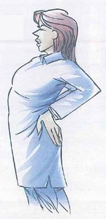
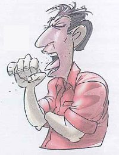
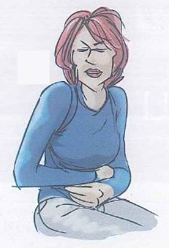
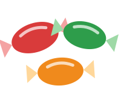
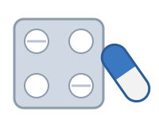
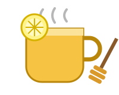
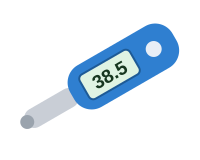
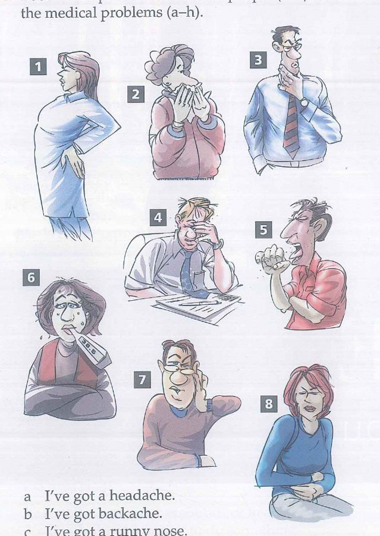
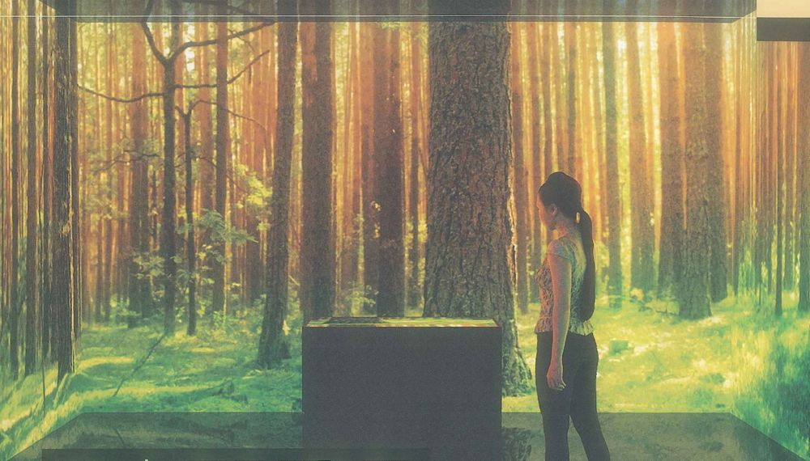

Sheet 1 / 10 · Unit 1c Nature is good for you · 1d At the doctor's · 4 periodsAims of the lesson & Lead-in Aims of the lessonAfter the lesson, students will be able to:📚Knowledgeunderstand words and phrases about nature and health, and the main ideas of the article Nature is good for you;distinguish the three uses of feel: feel better, feel like + -ing and feel that …;use collocations for medical problems to talk about illness.🛠️Skillsscan for details and skim for gist in reading tasks about nature and health;pronounce and use the lesson's collocations to give opinions on nature and medical problems;ask how someone feels and give simple advice in a pharmacist–customer role-play.💡Attitudefeel confident sharing opinions about health and lifestyle in a group;care about your own health and spend more time close to nature;enjoy using only English during the lesson. Lead-in 1 · What's the matter?⏱ ~8 min1:30Guess 90"Guess and explain 4'⏹GameGuess the medical problem or the remedy from a description1Her hand is on her lower back and she can't stand up straight.…backachea bad coughcough sweetshoney and lemona temperaturea thermometerpillsstomach achea runny nosea headacheearachea sore throatbackache2She holds a tissue to her face all day and keeps blowing her nose.…a temperatureearachestomach achea sore throatpillsa bad coughhoney and lemonbackachea runny nosea thermometercough sweetsa headachea runny nose3It hurts when he swallows, so he keeps touching his neck.…cough sweetshoney and lemona sore throatearachea headachea temperaturebackachepillsa thermometerstomach achea runny nosea bad cougha sore throat4He is holding his forehead after six hours of paperwork.…a runny nosepillsa thermometerstomach achea headachea sore throata temperaturea bad coughearachebackachecough sweetshoney and lemona headache5He covers his mouth and makes a loud, dry noise again and again.…stomach achea headachehoney and lemona runny nosecough sweetsearachea thermometera temperaturea sore throatbackachea bad coughpillsa bad cough6She is hot and sweating, but she is shivering at the same time.…honey and lemoncough sweetsearachea thermometera runny nosestomach achea headachea temperaturea sore throata bad coughbackachepillsa temperature7He is holding one ear: the pain is deep inside it.…cough sweetsa sore throata bad cougha temperaturea thermometera headachepillshoney and lemonstomach achea runny noseearachebackacheearache8She is bending forward and holding her middle — maybe it was something she ate.…honey and lemoncough sweetsbackachea headachestomach achea bad cougha temperaturepillsa thermometera runny noseearachea sore throatstomach ache9Small, sweet and wrapped in paper: suck one slowly when your throat feels dry.…earachehoney and lemonstomach achea runny nosea bad cougha sore throata thermometera temperaturea headachecough sweetspillsbackachecough sweets10They're small and white: you swallow them with water, one twice a day for seven days.…earachea bad cougha runny nosepillsa headachehoney and lemonbackachea sore throata thermometercough sweetsa temperaturestomach achepills11A hot drink for a sore throat, with something yellow and something sweet in it.…a runny nosestomach achecough sweetsearachea bad cougha sore throathoney and lemona temperaturebackachea thermometera headachepillshoney and lemon12You put it under your tongue to find out if you have a fever.…stomach achea sore throata bad cougha headachea runny nosea thermometerbackacheearachehoney and lemona temperaturecough sweetspillsa thermometerCheckAnswer keyReset Lead-in 2 · Listening warm-up · Track 8⏱ ~8 minA · Before listeningWhat's wrong with the people in the pictures? — pick a suggestion —They have a headache or backacheThey're tired after workThey're hungryThey're boredThey're coldWhere do you usually go when you have a small medical problem? — pick a suggestion —to the pharmacyto the doctor'sto bedto the hospitalnowhere, I wait until I feel betterB · Listen to Track 82:00Listen once⏹🎧 Track 8 · SB p. 16 ex 4–5 — two conversations: at a pharmacy and at a doctor's (1'54")ListenChoose the correct answer1 · Where does the first conversation take place?A At a hospital.B At a pharmacy.C At a school clinic.2 · What problems does the customer in the first conversation have?A A runny nose and a sore throat.B Earache and a temperature.C A headache and a bad cough.3 · What problems does the patient in the second conversation have?A A bad cough and backache.B Stomach ache and a headache.C Earache and a temperature.CheckAnswer keyReset Speak in pairs · SB ex 6⏱ ~5 min3:00Speak in pairs 3'⏹SB ex 6 · Speak in pairsAsk your partner how they feel after a long day and what they do when they are ill.1 · What do you usually feel like doing after a day of classes?— pick a suggestion —going for a walksleepingplaying sportwatching videoscooking dinner2 · Do you feel that nature is good for you? Why / why not?— pick a suggestion —Yes, it helps me relaxYes, the air is fresherNot really, I prefer the cityYes, but I rarely have time3 · After a difficult day, what makes you feel better in the evening?— pick a suggestion —a hot showertalking to my familya walk in the parkmusican early night4 · What do you do when you have a small medical problem?— pick a suggestion —I go to bedI take medicine or pillsI go to the pharmacyI see my doctorA: What do you usually feel like doing after a day of classes?B: I usually feel like going for a run in the park near my dormitory.A: Do you feel that nature is good for you?B: Yes, I do. Half an hour under the trees helps me reduce stress.A: After a difficult day, what makes you feel better in the evening?B: A long phone call with my mum and an early night.A: And what do you do when you have a small medical problem?B: I go to the pharmacy first and ask the pharmacist for advice. How many words do you have for each of the 4 groups?⏱ ~4 min4:00Brainstorm 4'⏹For each group, type every English word or phrase you already know.Group 1Open group →Nature and healthHow does time in nature change the way you feel?Word hintsnature · outdoors · indoors · a national park · heart rate · brain · relax · relaxed · relaxing · healthy · healthier · physical health · reduce stress · lower your heart rate · get some fresh air · refreshed · mental wellbeing0Group 2Open group →Medical problemsWhat's the matter? Name the medical problem.Word hintsa headache · backache · a runny nose · earache · stomach ache · a temperature · a sore throat · a bad cough · a symptom · a persistent cough · come down with · feel under the weather · catch a cold · get over · recover from0Group 3Open group →Talking about illness and giving adviceWhat can a pharmacist say to a customer who feels ill?Word hintsHow do you feel? · I feel sick · You should take this medicine · Why don't you …? · Try drinking hot tea · It's good for a sore throat · twice a day · a prescription · side effects · the recommended dose · You'd better … · follow the instructions · if symptoms persist · an over-the-counter medicine · I'd recommend …0Group 4Open group →Giving examples: healthier townsHow could your town make people's lives healthier? Give examples.Word hintsfor example · such as · a good example is · a cycle path · a running track · a play area · new trees · a case in point · pedestrian-friendly · air pollution · public health · invest in · for instance · encourage people to · make a real difference · green spaces00words so far
Sheet 2 / 10 · 4 periods · self-studyRoadmap Key knowledge for each part of the testReadingFind the main idea of each paragraph and the examples that support it.Group 1Group 4→ Sheet 5ListeningListen for symptoms first, then for the exact advice: how often, how long, what to do next.Group 3Listening warm-up Sheet 1→ Sheet 6Speaking · Part 1Time outdoors, ways to relax, small illnesses and what you do about them.Group 1Group 2Group 3Chunks 4–6→ Sheet 7Speaking · Part 2Describe a medical problem, a park or a habit: what, when, how it affected you, and why.Group 1Group 2Group 3Group 45-step frame→ Sheet 7Speaking · Part 3Green cities, virtual nature, medicine without a prescription and the pharmacist's role in public health.Group 4Chunks 1–3Chunks 7–8→ Sheet 7Writing · sentences & paragraphAdvice with should / need to, feel + adjective and feel like + -ing, and health collocations.GrammarSentence upgrades→ Sheet 8 Plan for 4 periods (180 minutes)Period 1 · 45' · into the topic, medical problems2'Aims of the lesson (Sheet 1)8'Lead-in 1: guess 12 problems and remedies with a dropdown8'Lead-in 2: guess before listening + Track 8, first time for gist (3 MCQ)5'Speaking in pairs: feel questions about your day (SB ex 6)4'Diagnostic: type the words you know for 4 groups18'Group 2 · medical problems (SB p. 16 ex 1–2)Track 7 · one or two syllables → Pronunciation 1Group 3 · talking about illness, giving adviceExercise 1 (sort 12 phrases)Period 2 · 45' · reading, giving examples, feel17'Reading A · "Nature is good for you" · 10 MCQ · time it 12'Check in pairs 3': show the sentence that gives the answer10'Group 4 · giving examples (SB p. 14 ex 7–9)Reading A Round 3: discuss the 2 questions in pairs18'feel grammar (Sheet 4 cards 4–6)Group 1 · nature and health + Exercise 2 (health / relax word families)Start your My Healthy Habits Dossier (Sheet 3): 7 notes on one healthy habitPeriod 3 · 45' · listening, giving advice, examples12'Track 8 · Listening A (fill 6 gaps) → listen again · Listening B (6 MCQ)Read the script aloud in pairs, one pharmacist and one customer18'Advice grammar (Sheet 4 cards 1–3)Exercise 4 (a note from the pharmacist)Pronunciation 2: tricky sounds + intonation for strong adviceRole-play at the pharmacy (SB p. 16 ex 7)15'Exercise 3 (verb + noun)Groups of four: choose the best idea for a healthier town (SB p. 14 ex 10–12)Period 4 · 45' · speaking practice8'Chunk bank, 8 functionsB1 → B2 upgrade table5-step frame10'Speaking Part 1: 10 questions, 30" each, in pairs12'Part 2: 1' preparation + 2' speaking, cue A or BYour partner counts the collocations and ticks the checklist10'Part 3: groups of 3, 3 questions each, 5-step frame5'Quiz, first 5 questions (Sheet 10), books closedSet homeworkHomeworkWriting 1: 4 sentence-building items + 4 sentence upgrades (Sheet 8) + 5 sentences of advice about your healthy habit (Sheet 4)Writing 2: a 120–150-word paragraph about a medical problem you have had, a park you like visiting or a habit you haveReading B (Sheet 5), Exercises 5 · 6 · 7 · 8 · 9 · 10 (Sheet 9) and finish your My Healthy Habits Dossier (Sheet 3)Quiz on day 1 · 3 · 7 (Sheet 10) and add 10 phrases to your personal notebook How to learn a group of words1Read the Core tier aloudWords from the book — you've already met themCheck stress: HEADache · STOmach ache2Choose 4 B2 phrasesDon't learn the whole tableChoose phrases you'll actually use to describe one of your own healthy habits3Cover the meaning columnLook at the English phrase → say the meaningLook at the meaning → say the phrase4Write one sentence about yourselfAbout your evening walk, your sleep routine, your weekend in the parkUse 2 of the phrases you just chose5Say it in 30 secondsTime yourself, say that sentence + 2 moreRecord it, listen back
Sheet 3 / 10 · 4 word groups · Core words SB p. 14–16 · 37 B2 phrases · My Healthy Habits DossierNature & health vocabulary Group 1 · Nature and healthCore · SB p. 14–15 · Track 6🌿HEALTHnoun → adjective → comparative: good for your health, healthier peoplehealth (n)/helθ/the general condition of your body and mindFresh food and regular exercise are good for your health.healthy (adj)/ˈhelθi/physically strong and not likely to get illMy grandmother is 80 but still very healthy.unhealthy (adj)/ʌnˈhelθi/likely to make you ill, or not physically wellEating fast food every day is an unhealthy habit.healthier (adj)more healthy than before or than something elseSince he started cycling to work, he looks much healthier.healthily (adv)/ˈhelθɪli/in a way that is good for your bodyShe tries to eat healthily, with lots of vegetables.😌RELAXuse -ed for the person's feeling and -ing for its causerelax (v)/rɪˈlæks/to rest and stop worrying or feeling tenseAfter the exam, I just want to go home and relax.relaxed (adj)/rɪˈlækst/calm and not worried or tenseHe always seems relaxed, even before a big match.relaxing (adj)/rɪˈlæksɪŋ/making you feel calm and restedA walk in the park is very relaxing after work.relaxation (n)/ˌriːlækˈseɪʃn/the state of resting and feeling less tenseYoga is a popular form of relaxation.🌲OUTDOORSoutdoors / outside ≠ indoors / inside (out of or in a building)nature (n)/ˈneɪtʃə/everything in the physical world not made by peopleWe drove into the mountains to enjoy nature.natural (adj)/ˈnætʃərəl/existing in nature, not made or caused by peopleHoney is a natural sweetener.outdoors / outside (adv)/ˌaʊtˈdɔːz/ · /aʊtˈsaɪd/in the open air, not inside a buildingIn summer we eat outdoors most evenings.indoors / inside (adv)/ˌɪnˈdɔːz/ · /ɪnˈsaɪd/into or inside a buildingIt started raining, so we went indoors.●a national park●heart rate●the brain●3D virtual reality●a forest school●physical health●spend time outside●take a break●visit your local park●feel more relaxed●a large garden●rebuild nature●the connection between nature and healthUpgrade · B2Nature and the mindreduce stress/rɪˈdjuːs stres/make yourself less worried and tenseTwenty minutes in a park can reduce stress after a long shift at the pharmacy.mental wellbeing/ˈmentl ˌwelˈbiːɪŋ/a healthy, happy state of mindRegular walks by the water are good for students' mental wellbeing.refreshed/rɪˈfreʃt/full of energy again after a restI always come back from the lake feeling refreshed.Lifestyle and the bodya sedentary lifestyle/ˈsedntri/a way of life with a lot of sitting and little exerciseStudents who study at a desk all day can easily slip into a sedentary lifestyle.lower your heart ratemake your heart beat more slowlySitting quietly by the water can lower your heart rate after a stressful exam.Collocationsspend time outdoorsbe outside, not in a buildingOnly 10% of teenagers in the USA spend time outdoors every day.have a positive effect onmake something betterFresh air has a positive effect on the quality of your sleep.get some fresh airgo outside to breathe clean airLet's get some fresh air before the next lecture. Group 2 · Medical problemsCore · SB p. 16 ex 1a headache/ˈhedeɪk/a pain in your headI've got a headache after six hours of revision.backache/ˈbækeɪk/a pain in your backSitting on a hard chair all day gives me backache.a runny nose/ˈrʌni/liquid keeps coming out of your noseI've got a runny nose, so I always carry tissues.earache/ˈɪəreɪk/a pain inside your earThe little boy had earache, so his mother took him to the clinic.stomach ache/ˈstʌmək-eɪk/a pain in your bellyI ate too fast at lunch, and now I've got stomach ache.a temperature/ˈtemprətʃə/a body temperature that is higher than normalShe's got a temperature of 38.5, so she's staying in bed.a sore throat/ˌsɔː ˈθrəʊt/a pain when you swallowWarm water with honey is good for a sore throat.a bad cough/kɒf/you keep pushing air out of your chest with a loud noiseHe's got a bad cough and can't sleep at night.Upgrade · B2Describing symptomsa symptom/ˈsɪmptəm/a sign that you are illA runny nose is a common symptom of a cold.a persistent cough/pəˈsɪstənt/a cough that goes on for weeksA customer with a persistent cough should be sent to a doctor.a high temperaturea fever of 39 °C or moreA baby with a high temperature needs to see a doctor quickly.Getting ill and getting bettercome down with (sth)start to have a mild illnessI think I'm coming down with a cold.feel under the weatherfeel a little illI'm feeling under the weather, so I'll stay at home today.recover from/rɪˈkʌvə/become healthy again after an illnessMost people recover from a cold in about a week.Collocationsrun a temperaturehave a body temperature that is higher than normalThe baby is running a temperature, so we're going to the doctor's.get over (an illness)become well againIt took me two weeks to get over the flu.catch a coldbecome ill with a coldYou can easily catch a cold from a classmate who keeps sneezing. Pronunciation 1 · One or two syllables? · Track 7🎧 Track 7 · SB p. 16 ex 3 — listen, count the syllables, listen again and repeat (29")Pronunciation 1Listen and sort 10 words by the number of syllablesCheckAnswer keyResetSay the two-syllable words again and stress the first syllable: HEADache, STOmach Group 3 · Talking about illness and giving adviceCore · SB p. 16 ex 4–7 · Track 8●I don't feel very well.●I feel sick / ill.●Have you got a temperature?●How do you feel?●You need to …●You should take this medicine.●Why don't you …?●It's good for stomach ache.●Try drinking hot tea.●If you still feel ill, come back and see me again.●take one pill twice a day●go to bed●drink hot water with honey and lemon●buy some cough sweets●see a doctor●go to the pharmacyUpgrade · B2Giving advice politelyI'd recommend + V-inga polite way to tell someone what to doI'd recommend taking this syrup after meals.It might be a good idea toa soft way to suggest somethingIt might be a good idea to rest for a couple of days.You'd betterstrong advice: do it, or there may be a problemYou'd better see a doctor if the pain gets worse.At the pharmacy counteran over-the-counter medicinea medicine you can buy without a prescriptionParacetamol is an over-the-counter medicine in most countries.a prescription/prɪˈskrɪpʃn/a doctor's written order for a medicineYou need a prescription to buy antibiotics.side effectsunwanted results of taking a medicineThese pills can have side effects, such as feeling sleepy.Collocationstake (sth) twice a dayuse a medicine two times every dayTake one tablet twice a day after meals.follow the instructionsdo what the label or the pharmacist saysAlways follow the instructions on the box.the recommended dosethe amount of medicine you should takeNever take more than the recommended dose.if symptoms persistif the problem does not go awaySee a doctor if symptoms persist for more than three days. Pronunciation 2 · Tricky soundsPronunciation 2How do you say the letters in bold?1 · I've got a terrible headache.A /eɪk/B /eɪtʃ/2 · My stomach hurts after lunch.A /ˈstʌmətʃ/B /ˈstʌmək/3 · He's had a bad cough for a week.A /kɒf/B /kaʊ/4 · Hot tea is good for a sore throat.A /θrɔːt/B /θrəʊt/CheckAnswer keyResetGive strong advice with a high start, a rise, then a fall: You should take this medicine. Group 4 · Giving examples: healthier townsCore · SB p. 14 ex 7–12●For example, …●such as …●A good example is …●Another good example is …●One example of this is …●one hundred new trees●a 400-metre running track●a park with a children's play area●two cycle paths across the town●a bridge with a garden●make people's lives healthier●give reasons and examplesUpgrade · B2Introducing an examplea case in pointa clear example of what you have just saidSeoul is a case in point: it has planted new forests around the city.to illustrate thisto show it clearly with an exampleTo illustrate this, look at how many people jog by the lake at dawn.for instanceused to introduce one exampleSome habits, for instance an evening walk, cost nothing.Healthier citiespedestrian-friendly/pəˈdestriən/safe and pleasant for people on footThe streets around the lake become pedestrian-friendly at weekends.air pollutiondirty, harmful airTrees help to reduce air pollution in big cities.public healththe health of all the people in a placeCommunity pharmacists play an important role in public health.Collocationsinvest in/ɪnˈvest/spend money on something useful for the futureThe city should invest in parks, not car parks.make a real differenceimprove a situation a lotOne hundred new trees would make a real difference to our street.encourage people to/ɪnˈkʌrɪdʒ/make people want to do somethingCycle paths encourage people to leave their motorbikes at home.green spacesparks, gardens and other places with grass and trees in a townOur district needs more green spaces where people can exercise. My Healthy Habits DossierThe healthy habit you chooseWhen · how oftenWhere · the placeWhy · how it startedFeel · how it makes you feelHealth · what it does for your bodyAdvice · what you would tell a friend
Sheet 4 / 10 · Giving advice · feel · functional chunks · B1 → B2 upgradesGrammar & sentence patterns Grammar for this unitGiving advice: should, need to · SB p. 16Source: Mai Lan Huong, p. 106–108💊Formshould / shouldn't + base verbneed + to + verb, or need + nounYou should take this medicine twice a day.You need to take one of these pills for seven days.🎯When to use itshould = advice or an opinion (the listener still decides)shouldn't = advice not to do somethingneed to = it is really necessaryYou shouldn't go to class with a temperature.You need to see a doctor if the pain gets worse.⚠️Pitfallsno to after should: should to take → should taketo between need and a verb: You need drink more water → You need to drink more waterYou need to rest for a few days.You shouldn't drive after taking these pills.feel + adjective · feel like + -ing · SB p. 14Source: Mai Lan Huong, p. 116–124🌡️Formfeel + adjective: feel better / tired / relaxedfeel like + verb-ingnegative: don't feel like + verb-ingAfter a walk in the park, I feel better.I don't feel like studying tonight.🎯Meaning / usefeel + adjective = how your body or mind is (a linking verb, like be, look, seem)feel like + -ing = want to do somethingContact with nature helped them feel more relaxed.Do you often feel like going outside for a walk?⚠️Pitfallsafter a linking verb, use an adjective, not an adverb: I feel badly → I feel badafter feel like, use -ing, not to + verb: feel like to go → feel like goingI don't feel well today. (well = healthy, an adjective)I feel like having an early night.A frame worth using in the examWhen I feel …, I usually feel like …, and I feel that ….When I feel stressed, I usually feel like walking by the lake, and I feel that nature helps me think clearly.WriteWrite one true sentence about yourselfReset Advice · write about your healthy habitOpen your My Healthy Habits Dossier again (→ Sheet 3). Write 5 sentences that give a friend advice about that same healthy habit.Write5 sentences of advice about your healthy habitSentence 1Sentence 2Sentence 3Sentence 4Sentence 5ResetSwap with a partner — would they follow your advice? Why or why not? 8 functions · 24 chunks1 · Giving an opinionI feel that …In my view, …As far as I'm concerned, …I feel that every city needs more green spaces.2 · Giving a reasonThe main reason is that …This is because …That's why …The main reason is that fresh air helps people relax.3 · Giving an exampleFor example, …such as …A good example is …In Dubai, for example, there are plans for a mall with a large garden.4 · Describing symptomsI've got …I feel terrible.I don't feel very well.I've got a sore throat and I feel terrible.5 · Asking about healthHow do you feel?Have you got a temperature?Do you feel sick at all?Have you got a temperature, or is it just a sore throat?6 · Giving adviceYou should …Why don't you …?Try + V-ingWhy don't you try drinking hot water with honey?7 · ConcedingAdmittedly, …Of course, …Even so, …Admittedly, parks cost money. Even so, they save money on healthcare.8 · ConcludingOn balance, …All things considered, …So, all in all, …All things considered, a few more trees would make our street healthier. B1 → B2 sentence upgrades (9 patterns)B1B2Nature is very good for people.Nature has a positive effect on our physical health and mental wellbeing.I go to the park to feel less worried.I go to the park to reduce stress after long days in the lab.I am a bit ill today.I'm feeling under the weather today.I started to be ill with a cold last week.I came down with a cold last week.You must buy this medicine.I'd recommend trying this over-the-counter medicine.Take it two times every day.Take it twice a day and never go over the recommended dose.If you are still ill, go to the doctor.If symptoms persist, you'd better see a doctor.For example, South Korea has new forests.South Korea is a case in point: it has planted new forests near its cities.Because of cycle paths, people don't use their motorbikes so much.Cycle paths encourage people to leave their motorbikes at home. 5-step answer frameSample question: "Should cities spend more money on parks and green spaces?"1PointYes, I strongly believe they should,2Whybecause green spaces help people reduce stress and encourage people to exercise.3ExampleIn Toronto, for example, researchers found that healthier people lived near parks.4CounterAdmittedly, land in a city centre is very expensive.5EvaluationOn balance, though, a park is an investment in public health, not a luxury.Where to use thisPart 1: Point + Why (+ Example) — 2–3 clauses.Part 2: follow the cue card's 4 points, each one = Point + Why or Example.Part 2: finish with one Evaluation sentence.Part 3 and the paragraph: use all 5 steps — never skip Counter and Evaluation. 6 common errorsErrorCorrectionRememberYou should to take this medicine.You should take this medicine.No to after should.I feel like go outside.I feel like going outside.feel like + verb-ing.I feel badly today.I feel bad today.feel is a linking verb, so it takes an adjective.I have a pain of head.I've got a headache.Use the fixed phrases: a headache, stomach ache, a sore throat.Why don't you buying some cough sweets?Why don't you buy some cough sweets?Why don't you + base verb.Nature is good to your health.Nature is good for your health.good for + your health / a problem.
Sheet 5 / 10 · 4-option MCQ · passage fixed on the leftReading0 checked Reading A · Nature is good for you · SB p. 15Before you read · SB ex 1Look at the photo. Where is the woman? — pick a suggestion —in a forestin a studioWhat can she see? — pick a suggestion —trees and a foresta computer screenother peopleNature is good for you🖍 HighlightClear highlight1How do you feel about nature? After spending hours indoors, do you often feel like going outside for a walk? Or if you work for hours at your office desk, do you feel better when you take a break and visit your local park? Most people think that nature is good for us; it's good for our bodies and good for our brains. However, humans are spending more time inside and less time outside. For example, the number of visitors to Canada's national parks is getting lower every year. And in countries such as the USA, only 10% of teenagers spend time outside every day. Many doctors feel that this is a problem in the twenty-first century, and that it is making our physical health worse.2As a result, some doctors are studying the connection between nature and health: one example of this is the work of Dr Matilda van den Bosch in Sweden. The doctor gave people a maths test. During the test, their heart rate was faster. After the test, one group of people sat in a 3D-virtual-reality room for fifteen minutes with pictures and sounds of nature. Their heart rates were slower than people's in the other group. The virtual contact with nature helped them feel more relaxed. Another good example of how nature is good for health comes from Canada. In Toronto, researchers studied 31,000 people living in cities. Overall, they found that healthier people lived near parks.3Because of studies like these, some countries and cities want nature to be part of people's everyday life. In Dubai, for example, there are plans for a new shopping mall with a large garden so shoppers can relax outside with trees, plants and water. In some countries such as Switzerland, 'forest schools' are popular; schoolchildren study their subjects in the forests and do lots of exercise outside. And South Korea is another good example: it has new forests near its cities and around 13 million people visit these forests every year. So after building cities for so long, perhaps it's now time to start rebuilding nature.Life Pre-Intermediate SB p. 15 · Unit 1c · 🎧 Track 61:30Skim + Scan 90"⏹Round 1Skim & Scan — a quick read before the MCQSkimSkim the whole article in 30 seconds.Scan 1How many people living in cities did the researchers in Toronto study? Write the number in figures. Scan 2For how many minutes did one group sit in the virtual-reality room? CheckAnswer keyReset12:00Read + answer 12'Check in pairs 3'⏹🎧 Track 6 · SB p. 15 — the article Nature is good for you (3'15")Round 2Choose the correct answer for 10 questions1 · What is the main point of the article?A Doctors should build more hospitals in forests.B Contact with nature helps our health, so some places are bringing it back into city life.C Teenagers in the USA now spend far too much of their free time playing sport in parks.D Virtual reality rooms are replacing real parks in most countries.Why? Paragraph 1 says nature is good for us but we live indoors; paragraphs 2–3 show the studies and the cities that are bringing nature back.2 · According to paragraph 1, what is happening at Canada's national parks?A They are becoming more popular with teenagers.B They are free for families this year.C Visitor numbers stay the same from year to year.D Fewer people go to them each year.Why? "Getting lower every year" means that each year fewer people visit.3 · Why do many doctors see the change as a problem?A It is harming people's physical health.B It makes parks too crowded at weekends.C It costs hospitals a lot more money.D It stops children from doing their homework.Why? The doctors' worry is at the end of paragraph 1: our physical health is getting worse.4 · In paragraph 2, the word "connection" is closest in meaning toA differenceB journeyC linkD argumentWhy? A "connection" between two things is a link: here, the way nature and health affect each other.5 · What happened to the people's heart rate during the maths test?A It stayed normal.B It went up.C It stopped for a moment.D It became slower than usual.Why? A faster heart rate means that it went up: the test was stressful.6 · How were the people who saw nature after the test different from the others?A Their hearts beat more slowly.B They got higher marks in the test.C They wanted to take the test again.D They felt more tired than before.Why? Their heart rates were slower, so their hearts beat more slowly than the other group's.7 · What does the Toronto study suggest?A People in cities are healthier than people in the countryside.B Toronto's parks are too small for its population.C The researchers only studied people who were already ill.D Living close to green areas may be good for your health.Why? The healthier people lived near parks, so the study suggests that green areas nearby can help your health.8 · What is the purpose of the garden in the planned mall in Dubai?A To grow fruit and vegetables for the shops.B To attract tourists from Switzerland.C To let shoppers rest among plants, trees and water.D To give children a place for their lessons.Why? The garden is there so that shoppers can relax outside, with trees, plants and water around them.9 · In paragraph 3, what does "it" refer to in "it has new forests near its cities"?A South KoreaB SwitzerlandC DubaiD a forest schoolWhy? "It" points back to South Korea, the example just named before the colon.10 · What does the writer imply in the last sentence?A Cities should stop growing at once.B After years of building cities, we should now bring nature back.C Nature will grow back on its own without our help.D People no longer want to live in cities.Why? The writer suggests that, after so much building, it is time to put nature back into our lives.CheckAnswer keyReset Round 3 · Reading → Speaking — sample answers1The problemWe spend more time indoors, and our health is getting worse.2The evidenceStudies in Sweden and Canada link nature with better health.3The solutionSome cities are bringing nature back into everyday life.1 · Do you feel that nature is good for you? Why / why not?See a sample answerPointYes, I feel that nature is good for both my body and my mind. WhyAfter a long day in the lab, twenty minutes in the park helps me reduce stress, and I sleep much better. ExampleA good example is last exam season: I walked by the lake every evening and felt calmer than my friends who stayed inside.2 · Which idea from the article would work best in your town? Give an example.See a sample answerPointIn my view, forest schools would work well here. WhyChildren in our cities sit in classrooms all day, and very few spend time outdoors after school. ExampleFor instance, the primary school near my home could use the park next door for its science lessons. Reading B · Green prescriptionsGreen prescriptions🖍 HighlightClear highlight1In some countries, a visit to the doctor can end in a surprising way. Instead of more pills, the patient leaves with a note that says: walk in the park for thirty minutes, three times a week. Doctors in New Zealand started writing these "green prescriptions" in the late 1990s, and doctors in Canada and the UK now write them too.2The idea is simple. Many of the patients who come in with backache, poor sleep or high blood pressure live a sedentary lifestyle. They sit at a desk all day, drive home and then sit in front of a screen all evening. For them, medicine is only part of the answer. They also need to move more and to spend time outdoors.3A walk in a park can do some of the things that tablets do. It lowers blood pressure, helps people to reduce stress and often improves sleep. Unlike tablets, it costs nothing, and it has no side effects apart from tired legs and, now and then, wet clothes.4Pharmacists can help here as well. A customer who buys painkillers every week for the same headache may need more than another box of tablets: perhaps a visit to the doctor. A few friendly questions about sleep, work and exercise can sometimes do more good than anything on the shelf.5None of this replaces real medicine. A patient with a serious bacterial infection still needs antibiotics, and no walk will mend a broken leg. But as cities grow, many doctors think that a little time with trees and water every day could be one of the cheapest ways to improve public health.10:00Read + answer 10'⏹FindFind the health phrase in the passage1a sedentary lifestyle …Paragraph 4Paragraph 2Paragraph 3Paragraph 5Paragraph 2 describes these patients: they sit all day at work and all evening at home.2reduce stress …Paragraph 4Paragraph 3Paragraph 5Paragraph 2Paragraph 3 lists what a walk does: lower blood pressure, less stress, better sleep.3side effects …Paragraph 4Paragraph 3Paragraph 5Paragraph 2Also in paragraph 3: unlike many medicines, a walk causes no unwanted problems, only tired legs.4public health …Paragraph 5Paragraph 2Paragraph 3Paragraph 4Paragraph 5 ends with the bigger picture: the health of everyone who lives in a city.CheckAnswer keyResetReading BChoose the correct answer for 6 questions1 · What is the passage mainly about?A How to write a prescription for pills.B Why New Zealand has more doctors than other countries.C Doctors who ask patients to spend time in nature as part of their treatment.D The dangers of walking in the rain.2 · According to paragraph 2, who might get a green prescription?A A patient who has just broken a leg playing football.B A patient who already exercises every day.C A child who studies at a forest school.D Someone who sits down for most of the day.3 · What does the word "sedentary" mean in paragraph 2?A active and busyB involving a lot of sittingC healthy, calm and relaxed at homeD expensive and modern4 · What does the writer suggest about the pharmacy customer in paragraph 4?A The headaches may come from the way the customer lives.B The customer should buy a bigger box of tablets.C Pharmacists should stop selling painkillers to anyone who asks for them.D The customer needs antibiotics at once.5 · According to paragraph 5, what can a green prescription NOT do?A Help people sleep better.B Lower blood pressure.C Help the millions of people who live and work in big cities.D Take the place of medicine for a serious illness.6 · Which statement best describes the writer's opinion?A Walking is better than every kind of medicine.B Only doctors in New Zealand should use nature in treatment.C Time in nature is a cheap and useful addition to normal treatment.D Green prescriptions cost cities too much money.CheckAnswer keyReset
Sheet 6 / 10 · Part 3 note completion · Part 4 multiple choiceListening0 checked Listening A · Track 8 · Complete the notesBefore you listen · SB ex 4–5When did you last feel ill? Did you go to a pharmacy or see a doctor?🎧 Track 8 · SB p. 16 ex 4–5 — two conversations: at a pharmacy and at a doctor's (1'54")0:45Read the task 45"Listen once⏹Listening AComplete the notes — choose the word or number for each gapAt the pharmacy and at the doctor'sConversation 1: the customer's temperature is (1) …normalhighlow.The pharmacist says to take the medicine (2) …three timesoncetwice a day.The pharmacist also suggests hot water with honey and (3) …milklemonginger.If the customer still feels ill in a few days, the advice is to see a (4) …pharmacistnursedoctor.Conversation 2: the patient must take one pill twice a day for (5) …tenfiveseven days.The pills might make the patient feel (6) …sicksleepyhungry.CheckAnswer keyReset Listening B · Track 8 · Choose the answer2:00Listen again⏹Listening BListen a second time · choose the correct answer1 · How does the customer in conversation 1 feel?A Terrible.B Much better than yesterday.C Only a little tired.2 · Why does the pharmacist recommend the medicine?A It helps you sleep.B It is cheaper than cough sweets.C It is good for a sore throat.3 · What does the doctor see inside the patient's painful ear?A Something small is stuck in it.B It is very red.C It looks completely normal.4 · How does the patient's other ear feel?A More painful than the first one.B A bit hot.C Fine.5 · What does the doctor find when checking the patient's temperature?A It is higher than normal.B It is normal.C It is lower than normal.6 · When should the patient come back to see the doctor?A After seven days, even if the earache has gone.B If the patient still feels ill.C Tomorrow morning.CheckAnswer keyResetAudioscript · Track 8Conversation 1. Pharmacist: Hello, how can I help you? Customer: Hello. I've got a runny nose and a sore throat. I feel terrible. Pharmacist: Have you got a temperature as well? Customer: No, it's normal. Pharmacist: Well, you should take this medicine twice a day. It's good for a sore throat. Customer: Thanks. Pharmacist: And try drinking hot water with honey and lemon. That helps. Customer: OK. I will. Pharmacist: Oh, and why don't you buy some cough sweets? They should help. If you still feel ill in a few days, see a doctor.Conversation 2. Doctor: Good morning. So, what's the problem? Patient: I've got earache in this ear. It's really painful. Doctor: Let me have a look. … ah … yes, it's very red in there. What about the other one? Patient: It feels fine. Doctor: Hmm. It's a bit red as well. Do you feel sick at all? Patient: No, not really.Doctor: Let me check your temperature. … Yes, it's higher than normal. OK, I'll give you something for your earache. You need to take one of these pills twice a day for seven days. They might make you sleepy so go to bed if you have to. And if you still feel ill, then come back and see me again. After listening — role-play at the pharmacyAfter listening · SB ex 71 · Customer: describe your symptomsSee a sample answerI don't feel very well. I've got a bad cough and a sore throat, and I think I'm coming down with a cold. I feel terrible: it hurts when I swallow, and I didn't feel like eating breakfast this morning.2 · Pharmacist: ask questions and give adviceSee a sample answerHow do you feel today? Have you got a temperature? Do you feel sick at all? I'd recommend taking this syrup: take it twice a day after meals. Why don't you try drinking warm water with honey, too? And if symptoms persist, you should see a doctor.3 · Change roles with a new problemSee a sample answerCustomer: I've got stomach ache and I feel sick. Pharmacist: This is an over-the-counter medicine, so you don't need a prescription. Follow the instructions on the box and never take more than the recommended dose. It can have mild side effects, so you'd better not drive after you take it.
Sheet 7 / 10 · Part 1 interview · Part 2 long turn from the speaking-test bank · Part 3 discussionSpeaking Part 1 · 10 personal questions — 30 seconds each0:3030"45"⏹Answer = Point + Why (+ Example).1 · How much time do you spend outdoors on a normal day?— choose —Show sample answerPointNot as much as I'd like, maybe forty minutes. WhyMost of my day is in lecture halls and the lab, so at lunchtime I try to spend time outdoors and get some fresh air.2 · Where do you go when you want to relax?— choose —Show sample answerPointUsually to the lake near my dormitory. WhyWatching the water makes me feel more relaxed, and the walk there helps me reduce stress before an exam.3 · What do you usually feel like doing after a long day of classes?— choose —Show sample answerPointHonestly, I usually feel like lying on my bed with my phone, Whybecause my back and eyes are tired after hours in the lab. CounterBut when I go for a short walk instead, I come back refreshed and I can study again.4 · Is there a park near your home?— choose —Show sample answerPointYes, there's a small one five minutes from my house. ExampleIn the early morning it's full of older people doing exercises, such as tai chi and badminton. WhyThe air is much cleaner than on the main road, so I often go there to get some fresh air.5 · Do you think your lifestyle is healthy?— choose —Show sample answerPointNot completely, to be honest. WhyLike many pharmacy students, I have a sedentary lifestyle: I sit in lectures all morning and then study at my desk until late.6 · When did you last feel ill?— choose —Show sample answerPointLast month, when I came down with a cold. WhyI had a runny nose and a sore throat for three days, but I got over it in about a week.7 · What do you do when you have a headache?— choose —Show sample answerPointFirst, I drink a big glass of water and rest for a while. WhyIf it doesn't go away, I take an over-the-counter medicine like paracetamol, but I always follow the instructions on the box.8 · Do you usually go to a pharmacy or see a doctor when you're ill?— choose —Show sample answerPointUsually a pharmacy. WhyFor a small problem, a pharmacist gives me good advice quickly; I only see a doctor if symptoms persist or if I'm running a temperature.9 · What do you do to stay healthy?— choose —Show sample answerPointI try to walk at least eight thousand steps a day. WhyIt's free and easy, and it has a positive effect on my sleep and my mood.10 · What advice would you give a friend with a bad cough?— choose —Show sample answerPointI'd tell my friend to rest and drink plenty of warm water. WhyI'd also say, "Honey and lemon is good for a sore throat, but if it turns into a persistent cough, you'd better see a doctor."PracticeAnswer any 5 questions of your choice — 2–3 clauses each, ≥ 1 highlighted phraseQuestion 1— pick a suggestion —Not as much as I'd like, maybe half an hour at lunchtime.I try to spend time outdoors every evening after dinner.Question 2— pick a suggestion —Usually to the lake, because it makes me feel calm.Usually to the park near my house, because it helps me reduce stress.Question 3— pick a suggestion —I usually feel like sleeping, but a walk wakes me up.I usually feel like watching videos, but I try to go outside.Question 6— pick a suggestion —Last winter, when I came down with a bad cough.Two weeks ago, when I came down with a cold.Question 10— pick a suggestion —I'd tell my friend to rest. I'd say, "Why don't you drink hot tea with honey?"I'd tell my friend to see a pharmacist. I'd say, "Why don't you buy some cough sweets?"ResetSelf-check: Point + Why? · 1 highlighted phrase? · ≤ 30 seconds? Part 2 · Cue card — 1 minute preparation, 2 minutes speaking2:00Prepare 1'Speak 2'⏹A genuine cue card from the speaking-test bank. How to speak: 4 points = 4 short sections, ending with one evaluation sentence.Cue A · Topic 2 from the speaking-test bankDescribe a medical problem you have experienced.You should say:What the medical problem wasWhen you first noticed itHow it affected your daily lifeand explain why you got it.— choose —Show sample answer — cue A (≈ 235 words, 2 minutes)PointI'd like to talk about a bad sore throat I had last winter, just before my first exams at university. HowI first noticed it on a cold Monday morning. I woke up with a dry, painful throat, and by the evening I was running a temperature of thirty-eight and a half. I didn't feel like eating anything, and it really hurt when I swallowed.ExampleIt affected my daily life quite a lot. I couldn't concentrate in lectures, I missed two lab sessions and I felt tired all the time. My roommate said, "Why don't you go to the pharmacy?" So I did. The pharmacist asked about my other symptoms, told me I should take paracetamol and lozenges, and suggested that I try drinking warm water with honey and lemon. She also said, "You need to see a doctor if symptoms persist for more than three days."WhyWhy did I get it? I think it's easy to catch a cold when you study late every night, sleep very little and sit all day next to classmates who are coughing, and that's exactly what I did.CounterAdmittedly, it was only a minor illness. EvaluationOn balance, though, I feel that it taught me a useful lesson: exams matter, but so does sleep. I got over it in a week, and these days I'm in bed by midnight, even in exam season.≈ 235 words · 2 minutes · the 3 points and the explain line · advice with should / need to / Why don't you / try + -ing · 3 uses of feel · 1 concession sentence · 5 collocationsCue B · Topic 3 from the speaking-test bankDescribe a park you like visiting.You should say:What name it isWhere it is locatedWhat people usually do thereand explain why you like this place.— choose —Show sample answer — cue B (≈ 223 words, 2 minutes)PointThe park I'd like to describe is Thong Nhat Park in Hanoi. HowIt's located just south of the city centre, about fifteen minutes by bus from my dormitory. It's a big park with a large lake in the middle, old trees along the paths and plenty of benches in the shade.ExamplePeople use it in lots of different ways. In the early morning, older people do tai chi and aerobics by the water. At lunchtime, office workers sit under the trees to get some fresh air, and at weekends, families come with young children, who love the playground. Green spaces can make a real difference to city life, and this park is a case in point.WhyI like it for two reasons. First, I always feel more relaxed there: after a long week in the lab, a slow walk around the lake helps me reduce stress. Second, it's free and open to everyone, not only to people who can pay for a gym, so it's good for public health.CounterAdmittedly, it gets crowded and noisy on Sunday afternoons. EvaluationAll things considered, though, it's a place where I feel like staying a little longer every time. If you ever visit Hanoi, you should go there at six in the morning, when the air is still cool and fresh.≈ 223 words · 2 minutes · the 3 points and the explain line · 1 advice sentence (you should) · 2 uses of feel · 1 concession sentence · 6 collocationsExtra practice cue C · Topic 1Describe a habit that you have.You should say:What the habit isWhen and how often you do itWhy you developed this habitand explain how this habit affects your daily life.Idea starters — cue CWhat: an evening walk · a healthy habit that helps me reduce stressWhen / how often: every evening after dinner, for about thirty minutes · five times a weekWhy: I started because I had backache from a sedentary lifestyle · my doctor said I should move moreEffect: I feel more relaxed and refreshed · it has a positive effect on my sleep · afterwards I feel like studying againExtra practice cue D · Topic 6Describe a daily routine that you enjoy.You should say:What it isWhere and when you do itWho you do it withand explain why you enjoy it.Idea starters — cue DWhat: a morning jog in the park before classes · or cooking a healthy dinner with friendsWhere / when: in the park near my dormitory, at six in the morningWho with: my roommate · we encourage each other to get up earlyWhy: I feel that it's the calmest time of day · I get some fresh air · I come back refreshedTipIf you choose to describe your own healthy habit (cue C), take the content straight from My Healthy Habits Dossier (→ Sheet 3) for each point in your outline below.PracticePlan 4 points for cue A or B, then time yourself: 1' preparation + 2' speakingPoint 1 — what it is— pick a suggestion —The medical problem I'd like to talk about is a bad sore throat.The park I'd like to describe is the one near my dormitory.Point 2 — when you noticed it / where it is— pick a suggestion —I first noticed it on a cold Monday morning.It's located about fifteen minutes from my home.Point 3 — how it affected you / what people do there— pick a suggestion —It affected my daily life: I couldn't concentrate in class.People usually jog, do tai chi or sit under the trees.Point 4 — why + Evaluation— pick a suggestion —I think I got it because I slept very little that week.Admittedly it gets crowded, but on balance it's my favourite place.Spoke for 2 minutes without stopping for more than 3 secondsAnswered the 3 points and the final explain line of the cue cardUsed at least 5 collocations from Groups 1–4Gave advice with should / need to / Why don't you …?Used feel in two different ways (feel better · feel like · feel that)Ended with a concession (Admittedly) and a conclusion (On balance)ResetRecord yourself on your phone · your partner listens and counts collocations · tick the checklist Part 3 · 10 discussion questions — 45–60 seconds each1:001' / question45"⏹Frame: Point Why Example Counter Evaluation — a model answer is ≈ 90–110 words = 45–60 seconds.1 · Why do people today spend less time outdoors than in the past?— choose —Show sample answerPointMainly because our work and our free time have both moved indoors. WhyThis is because most jobs now happen at a desk, and after work a phone or a laptop is easier than a walk. ExampleFor example, many of my classmates study in the library all day and then watch films in their room all evening. CounterOf course, big cities also have fewer green spaces and more air pollution, so going outside is less attractive. EvaluationSo, all in all, it's partly our habits and partly the way our cities are built.2 · Should every city have more parks and green spaces?— choose —Show sample answerPointDefinitely. As far as I'm concerned, parks are not a luxury. WhyThe main reason is that they give people a free place to exercise and relax, and trees help to clean the air. ExampleA good example is Seoul, which has made its streets more pedestrian-friendly and planted forests around the city. CounterAdmittedly, land in a city centre is very expensive, and some people would rather have a new car park. EvaluationOn balance, though, cities should invest in parks, because healthier people cost the health system less.3 · Is virtual nature, like the 3D room in the article, as good as the real thing?— choose —Show sample answerPointI don't think so, although it's better than nothing. WhyReal nature gives you fresh air, sunlight and a reason to walk, and a screen can't do that. ExampleThe study from Sweden shows that even fifteen minutes of virtual nature can lower your heart rate, but the people were still sitting in a room, breathing the same air. CounterEven so, virtual nature could really help patients in hospital who can't go outside at all, such as older people after an operation. EvaluationAll things considered, it's a useful tool, but it shouldn't replace a real walk in a real park.4 · Should schools give some lessons outside, like the forest schools in the article?— choose —Show sample answerPointYes, at least some lessons. WhyChildren who spend time outdoors move more, concentrate better and often enjoy school more. They also learn to notice the plants, birds and weather around them. ExampleFor instance, a biology lesson about leaves and flowers makes much more sense in a garden than in a classroom full of pictures. CounterOf course, the weather can be a problem, especially in the rainy season, and teachers need extra training to manage a class outside. EvaluationSo, all in all, one or two outdoor lessons a week would be a good start for most schools.5 · Why do many young people have an unhealthy lifestyle?— choose —Show sample answerPointI think it's mostly about time and habits. WhyStudents sit at a desk for long hours, so they slip into a sedentary lifestyle without noticing it. They also eat fast food and go to bed late, and many spend their free time on their phones instead of playing sport. ExampleDuring exam season, for example, many students live on instant noodles and five hours of sleep, so it's easy to catch a cold. CounterOf course, plenty of young people do play sport, cook at home and know a lot about healthy food. EvaluationOn balance, they know what is healthy; the difficult part is doing it every single day.6 · Is it a good idea to buy medicine without a prescription?— choose —Show sample answerPointFor small problems, yes, but only with good advice from a pharmacist. WhyAn over-the-counter medicine like paracetamol is safe if you follow the instructions and don't go over the recommended dose. ExampleIn Vietnam, for example, many people buy antibiotics for a simple cold, which is dangerous and doesn't help at all. CounterAdmittedly, some people still buy the wrong medicine or take too much of it, even after a pharmacist has advised them. EvaluationSo I feel that medicines like antibiotics should always need a prescription, and everything else should come with a pharmacist's advice.7 · Should people talk to a pharmacist before they see a doctor?— choose —Show sample answerPointIn many cases, yes. WhyPharmacies are on almost every street and there's no queue. That's why a pharmacist can deal with a runny nose or a sore throat in five minutes. ExampleWhen I had a bad cough, the pharmacist said, "It might be a good idea to rest for two days, and come back if it gets worse." CounterEven so, a pharmacist can't examine you, so chest pain or a high temperature in a baby needs a doctor at once. EvaluationOn balance, the pharmacist is a good first step, not the last one.8 · How can pharmacists help to improve public health?— choose —Show sample answerPointIn more ways than people think. WhyPharmacists see thousands of customers every year, so they can give simple health advice to people who never visit a doctor, especially in the countryside. ExampleTo illustrate this, a pharmacist who explains side effects clearly, or asks about sleep and exercise, protects public health one customer at a time. Some pharmacies also check blood pressure for free. CounterAdmittedly, a busy pharmacy has little time for long conversations, especially in the flu season. EvaluationEven two minutes of good advice, though, can make a real difference to someone's health.9 · Do people take too much medicine nowadays?— choose —Show sample answerPointIn my view, many people do. WhyThis is because pills are cheap and easy to buy, and people want to recover from every minor illness in one day. ExampleFor example, some people take painkillers for a mild headache that a glass of water and some rest would cure. CounterOf course, for serious illnesses, medicine saves lives, and nobody should stop taking it without advice from their doctor. EvaluationSo, all in all, the problem is not medicine itself but taking it when we don't really need it, or without asking a pharmacist first.10 · Is it the government's job to encourage people to live healthily?— choose —Show sample answerPointPartly, yes, but not completely. WhyThe government builds roads, parks and schools, so it can encourage people to walk and cycle more, and it can give children better food at school. ExampleA good example is a city with safe cycle paths and clean parks: people leave their motorbikes at home without being told to. CounterOf course, nobody can force adults to eat vegetables, stop smoking or go to bed early. EvaluationAll things considered, the government should make the healthy choice the easy choice, and then let people decide for themselves.PracticeChoose 3 questions, plan the 5 steps, then speak for 1 minute on eachPoint— pick a suggestion —In my view, every city needs more parks.As far as I'm concerned, pharmacists are the first step.Why + Example— pick a suggestion —The main reason is that parks are free for everyone. For example, …This is because most jobs happen at a desk. For example, …Counter— pick a suggestion —Admittedly, land in the city centre is expensive.Even so, virtual nature can help patients in hospital.Evaluation— pick a suggestion —On balance, parks are an investment in public health.All things considered, it's a good first step.Spoke for 45–60 seconds, in 3 sentences or moreFollowed Point → Why → ExampleAdded a concession (Admittedly / Of course / Even so)Used at least 1 B2 collocation (Groups 1–4)Finished with one evaluation sentence (On balance / All things considered)ResetGroups of 3: A asks — B answers — C counts collocations and concession sentences
Sheet 8 / 10 · Sentence building · a 120–150-word paragraph from the speaking-test bankWriting0 checked Critical thinking: giving examplesWhen you make a point, readers don't just want to hear it — they want to see it. A real example makes your point clear and believable. In writing, this usually works in three simple steps: Point → signal phrase → Example. You state your idea first, then use a short signal phrase ("for example", "such as" …) to introduce one real, specific detail that supports it — the same pattern you'll use in your own paragraph about a healthy habit.Signal phrasesIntroducing ONE example (starts a new sentence)For example, … — the most common, safe to use anywhereFor instance, … — same meaning and position as "for example"A good example of this is … — followed directly by the exampleIntroducing SEVERAL examples (inside the sentence)such as … — right after the noun it explains; a list of thingslike … — same job as "such as", more informalincluding … — the list is not complete — there are more examplesWorked exampleHumans are spending more time inside and less time outside. For example, the number of visitors to Canada's national parks is getting lower every year.Exercise 1Point or example? Tap the correct answer for each sentence1 · “For example, the number of visitors to Canada's national parks is getting lower every year.”A Main ideaB Example2 · “Humans are spending more time inside and less time outside.”A Main ideaB Example3 · “And in countries such as the USA, only 10% of teenagers spend time outside every day.”A Main ideaB ExampleCheckAnswer keyResetExercise 2Choose the correct signal phrase for each gap1 · Many students have bad habits ___ skipping breakfast or sleeping too late.A such asB for exampleC a good example of this is2 · Exercise is good for your health. ___, a 20-minute walk every day can lower stress.A Such asB LikeC For example3 · Some fruits are very good for digestion ___ apples and bananas.A for instanceB likeC a good example of this isCheckAnswer keyResetExercise 3Complete the sentences with an example from your own life1 · I relax in my free time in different ways. For example, …2 · My home town has some places with trees and nature, such as …3 · There are some beautiful national parks in my country. A good example is …ResetExercise 4Think of ONE healthy habit you have (this will be the topic of your Writing 2 paragraph). Write one POINT sentence about it, then one EXAMPLE sentence using a signal phrase from the card above.Point:Signal + Example:SamplePoint: One of my healthy habits is drinking enough water every day. Signal + Example: For example, I always carry a water bottle with me to class and the lab.Answer keyReset Writing 1a · Word order5:00Build the sentences 5'⏹Sentences a and c give advice; sentence d uses feel that.Writing 1aArrange the words into a sentencea Arrange 9 words into one correct sentence.b Arrange 7 words into one correct sentence.c Arrange 9 words into one correct sentence.d Arrange 10 words into one correct sentence.CheckAnswer keyReset Writing 1b · Upgrade B1 sentences to B2Writing 1bRewrite the 4 B1 sentences as B2 sentences, using the suggested chunk1 · B1: I am a little ill today.SampleI'm feeling under the weather today.2 · B1: Buy this medicine, you don't need a paper from the doctor.SampleThis is an over-the-counter medicine, so you don't need a prescription.3 · B1: Parks are good for all the people in a city.SampleGreen spaces have a positive effect on public health.4 · B1: If you are still ill after three days, go to the doctor.SampleIf symptoms persist, you'd better see a doctor.See sampleResetReveal the sample after writing · compare each chunk Writing 2 · A 120–150-word paragraphQuestion · choose 1 of 3 (from the speaking-test bank)Question 1 · Topic 2: Describe a medical problem you have experienced — what it was, when you first noticed it, how it affected your daily life, and why you got it.Question 2 · Topic 3: Describe a park you like visiting — what it is called, where it is, what people usually do there, and why you like it.Question 3 · Topic 1: Describe a habit that you have — what the habit is, when and how often you do it, why you started it, and how it affects your daily life.Write one paragraph of 120–150 words. Include six or more collocations from the lesson, one sentence of advice (should / need to / Why don't you …?) and one sentence with feel.Want to write about your own healthy habit? Take the content straight from My Healthy Habits Dossier (→ Sheet 3).Paragraph structure · 5 sentence groupsTopic sentence: name your topic clearly — One place I love visiting is … / The medical problem I remember best is …Point 1 — details: where or when — two facts with Group 1 or Group 2 wordsPoint 2 — what happens: what people do there / how it affected you — with an example (such as · a case in point)Point 3 — why + feelings: your reason with feel — I feel more relaxed … / I feel that …Closing sentence: advice + evaluation — If you …, you should … On balance, …Language for the paragraphOpening: One place I love visiting is … / The medical problem I remember best is …Health words: green spaces · reduce stress · running a temperature · get some fresh airExamples: such as … · A good example is … · a case in point · for instanceFeelings: I feel more relaxed · I feel like + -ing · I feel that …Closing: You should … · On balance, … · All things considered, …Sample answer · question 2 (≈ 150 words)PointOne place I love visiting is Lakeside Park, a small park beside the lake near my dormitory. HowIt lies just behind the university hospital, so medical and pharmacy students often walk there between classes to get some fresh air. ExamplePeople use it in simple, healthy ways: older residents do tai chi at dawn, children run on the grass and students read their notes under the trees. Green spaces make a real difference to a busy neighbourhood, and this park is a case in point. WhyI like it because I always feel calmer there. After a long day in the lab, twenty minutes by the water helps me reduce stress, and I feel that it has a positive effect on my sleep. EvaluationIf you study near the hospital, you should try walking there early in the morning. On balance, it is the cheapest medicine I know.≈ 150 words · topic sentence → location → what people do → reasons → advice and closing · 2 uses of feel · 1 advice sentence · 6 collocationsWriting 2Write the paragraph in 5 boxes, count the words, self-mark with the rubricTopic sentenceWord count: 0Point 1 — detailsWord count: 0Point 2 — what happensWord count: 0Point 3 — why + feelingsWord count: 0Closing sentenceWord count: 0Total: 0 / 120–150 wordsResetExchange paragraphs: your partner underlines every collocation, circles the advice and feel sentences, then scores it with the rubricCopy whole paragraphCriterionGood (4–5)Pass (3)Needs work (1–2)Self-scoreTask Fulfilment & RelevanceFully on topic, no irrelevant content.On topic but a few points are irrelevant or missing.Off topic or missing several important points.— score —54321Paragraph Structure & DevelopmentClear topic sentence, supporting points with concrete examples/reasons, a closing sentence.Has a topic sentence but development is uneven, examples still generic.No clear topic sentence, disjointed sentences, no closing sentence.— score —54321Organisation, Coherence & CohesionIdeas connect logically, varied linking words, clear reference.Organized but sometimes repetitive or mechanical linking.Disjointed sentences, very limited or incorrect linking words.— score —54321Lexical ResourceAccurate, varied vocabulary, natural collocations, little repetition.Vocabulary is adequate but still repetitive with a few word-choice errors.Very limited vocabulary, word errors that make it hard to understand.— score —54321Grammatical Range & AccuracyFlexible use of simple and complex sentences, errors very rare.Simple sentences are solid, complex sentences still have errors but don't block understanding.Mostly simple/fragmented sentences, many grammar errors, hard to understand.— score —54321Condensed from the "Paragraph writing" rubric (Cambridge 0–5 scale, 5 criteria) — use it to self-mark or swap papers with a partner.
Sheet 9 / 10 · 10 exercises · 1–4 in class · 5–10 for homeworkPractice — 10 interactive exercises0 checked Exercise 1 · Sort the chunks into their groupsExercise 1Tap to sort the 12 chunks into 4 groupsCheckAnswer keyReset Exercise 2 · Word family: health / relax · SB p. 15Exercise 2Choose the correct word form for 10 gaps1Nature is good for our bodies, our brains and our …unhealthyhealthhealthierhealthilyhealthy.2In Toronto, people who lived near parks were …healthierhealthyhealthilyhealthunhealthy than people who lived far from them.3Eating fast food every day is an …healthyunhealthyhealthierhealthhealthily habit.4Pharmacy students need to eat …healthilyhealthierunhealthyhealthhealthy, even during exams.5A very …healthhealthyhealthierhealthilyunhealthy breakfast gives you energy for the whole morning.6The virtual contact with nature helped them feel more …relaxingrelaxinglyrelaxedrelaxationrelaxesrelaxrelaxant.7A slow walk by the lake is very …relaxinglyrelaxingrelaxesrelaxedrelaxantrelaxationrelax after a long day.8In the new mall in Dubai, shoppers will …relaxrelaxedrelaxantrelaxesrelaxingrelaxinglyrelaxation outside with trees and water.9My grandmother does yoga for …relaxantrelaxrelaxinglyrelaxedrelaxingrelaxesrelaxation, not to lose weight.10My roommate usually …relaxrelaxesrelaxedrelaxingrelaxinglyrelaxationrelaxant by listening to music.CheckAnswer keyReset Exercise 3 · Collocations — choose the verb that fitsExercise 3Complete each health collocation with one verb1…spendtakemakepass time outdoors every day2…putdogetmake some fresh air between classes3…runcomeputfall down with a cold4The baby is …makingrunningdoingputting a temperature of 39 degrees.5…gokeepholdfollow the instructions on the box6It took me two weeks to …comeputtakeget over the flu.7…takedogivemake a real difference to the neighbourhood8The city should …spendcostinvestpay in more parks and cycle paths.CheckAnswer keyReset Exercise 4 · Giving advice — a note from the pharmacist · SB p. 16Exercise 4Choose the correct form for 8 gapsA pharmacist's note for a customer with a cold. You should …taketo taketaking this syrup twice a day after meals. You need …drinkto drinkdrinking plenty of water, too. Why don't you …takingto taketake a day off work? Try …garglinggargledgargle with warm salt water, because it is good …withforto a sore throat. You shouldn't …takingto taketake any other cold medicine at the same time. It might be a good idea …goinggoto go to bed early tonight. I'd recommend taking the syrup with food. If you still feel ill in three days, you'd better …seeingto seesee a doctor.CheckAnswer keyResetshould / shouldn't / you'd better / Why don't you + base verb · need to + verb · try + -ing · good for + noun Exercise 5 · Advice at the pharmacy — choose the right meaningExercise 5Choose the correct form for 12 gapsA customer who thinks she is catching a cold asks the pharmacist for advice. The pharmacist says: "You …shouldshouldn't rest this weekend, and you …shouldn'tshould go to the gym until you feel better. This syrup is an over-the-counter medicine, so you …need todon't need to show a prescription. You …shouldshouldn't take more than the recommended dose. It can make you sleepy, so you …shouldn'tshould drive after you take it. If you feel better in two days, you …don't need toneed to finish the bottle. But if you get a high temperature, you …need todon't need to see a doctor at once. You …need todon't need to buy cough sweets, because you haven't got a cough. Hot water with honey is good for a sore throat, so you …shouldn'tshould try it tonight. You …shouldshouldn't smoke while your throat is sore. Babies with a high temperature …don't need toneed to see a doctor quickly. And you …shouldshouldn't wash your hands often, so your family doesn't catch your cold."CheckAnswer keyResetAsk yourself: is it advice, a warning, something necessary, or something unnecessary? Exercise 6 · feel better, feel like or feel that? · SB p. 14 ex 4–5Exercise 6Choose the correct form with feel1 · After a walk in the forest, I always feel ___.A relaxinglyB relaxC relaxed2 · Do you ___ going for a walk after dinner?A feel likeB feel thatC feel3 · Many doctors ___ this is a problem in the twenty-first century.A feel like toB feel thatC feel better4 · I don't feel ___ today. I think I've got a temperature.A wellB good atC healthily5 · What do you usually feel like ___ after a day at work?A doB to doC doing6 · She took the medicine and now she feels much ___.A goodB betterC well better7 · I ___ that every hospital should have a garden.A feel likeB am feeling likeC feel8 · I feel ___ when I spend the whole day indoors.A tiredB tiredlyC tiringCheckAnswer keyReset Exercise 7 · Upgrading B1 → B2 — choose the natural, correct sentenceExercise 7Which sentence is the correct upgrade?1 · I'm a bit ill today.A I'm feeling below the weather today.B I'm feeling under the weather today.C I'm feeling under the climate today.2 · You can buy this medicine without seeing a doctor first.A This is an over-the-desk medicine, so you don't need a prescription.B This is an over-the-counter medicine, so you don't need a description.C This is an over-the-counter medicine, so you don't need a prescription.3 · Parks make people less worried.A Green spaces help people to reduce stress.B Green spaces help people to lose stress.C Green spaces help people to lower stresses.4 · Go to the doctor if you are still ill.A If symptoms insist, you'd better see a doctor.B If symptoms persist, you'd better see a doctor.C If symptoms persist, you'd better to see a doctor.5 · For example, South Korea has new forests.A South Korea is a case in point: it has new forests near its cities.B South Korea is a point in case: it has new forests near its cities.C South Korea is a case in fact: it has new forests near its cities.6 · Because of cycle paths, people don't use their motorbikes so much.A Cycle paths encourage people leaving their motorbikes at home.B Cycle paths encourage to people to leave their motorbikes at home.C Cycle paths encourage people to leave their motorbikes at home.CheckAnswer keyReset Exercise 8 · Find the evidence in the passageExercise 8Tap the sentence that answers the questionWhich sentence has the MAIN IDEA? (The other three give examples.)For instance, in many countries they check blood pressure and blood sugar for free. Pharmacists play a much bigger role in public health than most people think. They also explain side effects, such as feeling sleepy, and how long it takes to recover from a cold. To illustrate this, look at the flu season, when pharmacies in some countries give thousands of vaccinations.WhySentences 1, 3 and 4 give examples (For instance · such as · To illustrate this); only sentence 2 states the general idea they support.CheckAnswer keyReset Exercise 9 · Describe your healthy habit in 5–6 sentencesExercise 9Write 5–6 sentences about your healthy habitUse at least:2 Group 1 phrases (reduce stress · get some fresh air · lower your heart rate · refreshed)1 sentence with feel + adjective and 1 with feel like + -ing1 example with for example · such as1 sentence of advice to a friend (You should … · Why don't you …?)Word count: 0SampleOne healthy habit I have is an evening walk around the lake near my dormitory. I do it five times a week, usually after dinner, because I want to spend time outdoors after long hours in the lab. The walk helps me reduce stress, and I always feel more relaxed afterwards; sometimes I even feel like studying again. Other students have similar habits, such as jogging or playing badminton. Why don't you join me one evening? You should try it before your next exam.Answer keyResetRead it aloud to a partner, who counts the sentences with feel Exercise 10 · Transfer to your own field — introduce a suitable over-the-counter medicine and some simple adviceExercise 10Introduce a suitable over-the-counter medicine and some simple advice to a customer with a cold in 6–7 sentencesChoose: a sore throat and a runny nose · a headache and a temperature · a bad cough. Use at least:2 advice structures (should · need to · Why don't you …? · Try + -ing)1 symptom from Group 2 + 1 B2 symptom phrase (a persistent cough · run a temperature)2 Group 3 pharmacy phrases (follow the instructions · the recommended dose · side effects)1 sentence that starts If symptoms persist, …1 friendly question about how the customer feelsWord count: 0SampleHow do you feel today? I see you've got a sore throat and a runny nose, but you're not running a temperature. You should take this syrup twice a day after meals; it's an over-the-counter medicine, so you don't need a prescription. Please follow the instructions on the box and never take more than the recommended dose. Try drinking warm water with honey and lemon, and you'd better rest this weekend. If symptoms persist for more than three days, you need to see a doctor.Answer keyResetRole-play it with a partner: the customer asks one more question
Sheet 10 / 10 · Quiz · 1-3-7 review schedule · personal notebook · masteryReview — no looking at the book0 checked Quiz — 15 chunksQuizType the English chunk (equivalent forms are accepted)1to make yourself less worried and tense (verb + noun: r _ _ _ _ _ s _ _ _ _ _)2to go outside and breathe clean air (verb + some + adjective + noun: g _ _ s _ _ _ f _ _ _ _ a _ _)3a way of life with a lot of sitting and little exercise (noun phrase: a s _ _ _ _ _ _ _ _ l _ _ _ _ _ _ _ _)4parks and gardens in a town (adjective + plural noun: g… s…)5a sign that you are ill (noun)6to feel a little ill (feel + preposition + the + noun: f… u… the w…)7to start to have a mild illness, such as a cold (phrasal verb, 3 words: c… d… w…)8to have a body temperature that is higher than normal (verb + a + noun: r… a t…)9a doctor's written order for a medicine (noun)10unwanted results of taking a medicine (noun + plural noun: s… e…)11the amount of medicine you should take (the + adjective + noun: the r _ _ _ _ _ _ _ _ _ _ d _ _ _)12if the problem does not go away (if-clause, 3 words: if s… p…)13a clear example of what you have just said (noun phrase, 4 words)14to make people want to do something (verb + noun + to: e _ _ _ _ _ _ _ _ p _ _ _ _ _ to)15in better health than other people (comparative adjective, family of health)CheckAnswer keyResetDay 1 ___ · Day 3 ___ · Day 7 ___ 1-3-7 review scheduleDay 0In class4 vocabulary groupsReading A + BListening A + BSpeaking Part 1 · 2 · 3First 5 quiz questionsDay 1Quiz + speak 2'Quiz all 15 chunks with the book closedRedo Part 2 cue A without looking at your notesSubmit the 120–150-word paragraphDay 3Cover the meaning columnFor each group: look at the meaning → say the chunkRewrite your 5 sentences of advice from memoryExercise 6 + Exercise 7 a second timeDay 7Switch topicRedo the 4 Diagnostic boxes (Sheet 1), compare the score with Day 0Speak for 1' about advice for a friend who can't sleep using the same chunksQuiz a third time Personal collocation notebookHow to use itWrite down up to 10 chunks you are certain you will use in the exam, each with one sentence about yourself.Copy notebook Mastery checklist — 9 goalsI can answer 10 MCQ questions on "Nature is good for you" with ≥ 7 correct within 12 minutes.I can fill the 6 gaps and answer the 6 MCQ questions after listening to Track 8 twice, with ≥ 8/12 correct.I can answer Part 1 in 2–3 clauses within 30 seconds, with 1 topic chunk in each answer.I can speak for 2 minutes from a cue card, covering the 3 points and the explain line, and all 6 items in the Part 2 checklist.I can answer Part 3 using the frame Point → Why → Example → Counter → Evaluation within 45–60 seconds.I can build 4 sentences correctly and upgrade 4 B1 sentences to B2.I can write a 120–150-word paragraph on a speaking-test question that scores Pass (3) or higher on all 5 criteria of the Writing 2 rubric.I can give advice correctly (≥ 16/20 in Exercises 4–5) and use the three patterns with feel correctly (≥ 6/8 in Exercise 6).After 7 days I still score ≥ 13/15 on the quiz and have 10 chunks written in my personal notebook.